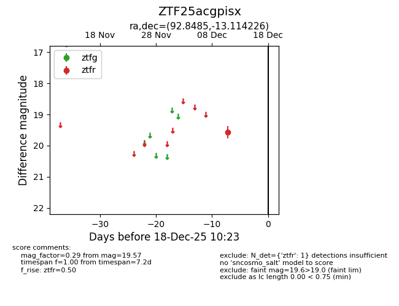
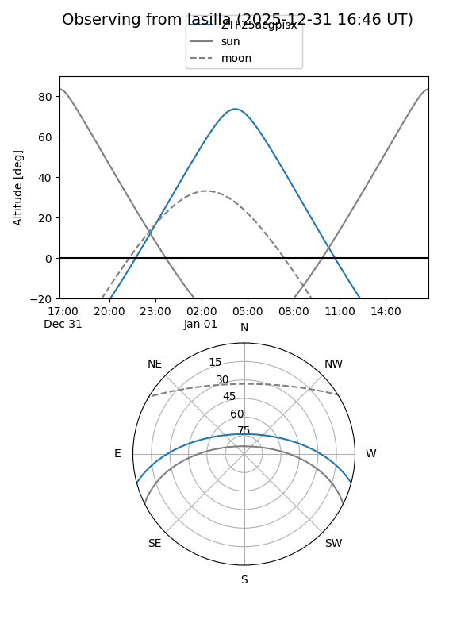
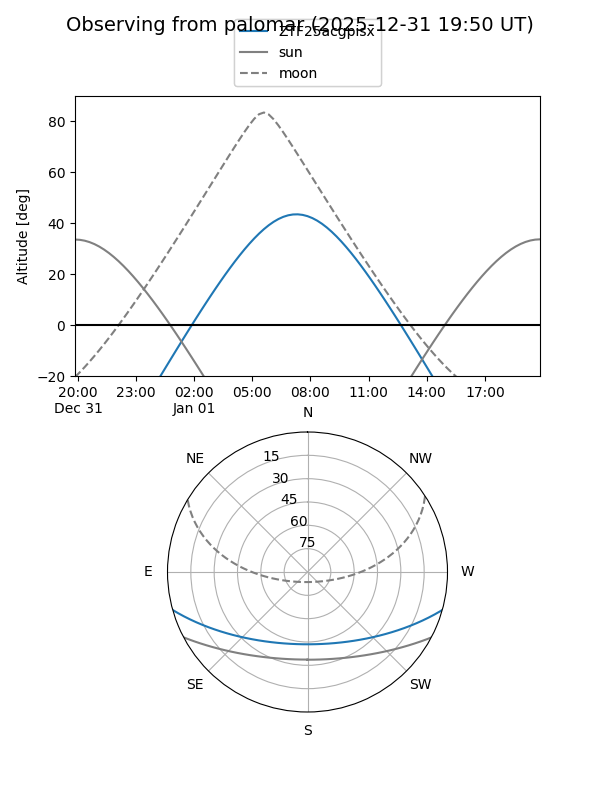

ZTF25acgpisx
Target ZTF25acgpisx at 2025-12-31 16:59
Aliases and brokers:
FINK:
Lasair:
ALeRCE:
alt names
ZTF25acgpisx (ztf,fink_ztf)
Coordinates:
equatorial (ra, dec) = 92.8485,-13.11423
equatorial (HMS+DMS) = 06:11:23.64,-13:06:51.21
galactic (l, b) = (220.3418,-14.72246)
Flags:
Photometry:
last ztfr=19.57
2 ztfr detections
Lightcurve

Visibility


Additional plots